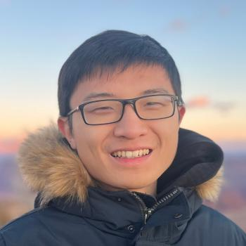

Metallogenic quantum criticality: Fermi surface nucleation at transitions between gapped phases
arXiv preprint · 2026
Theoretical condensed matter physics
Postdoctoral Fellow · Stanford University
I am a theoretical condensed matter physicist at the Leinweber Institute for Theoretical Physics at Stanford University.
I study how fractionalization gives rise to new phases and phase transitions in strongly interacting quantum matter. Much of my recent work explores unconventional topological superconductivity and non-Fermi liquid metals realized in itinerant interacting anyon fluids. Quantum Hall systems and moiré materials provide concrete settings for these theoretical ideas.

Postdoctoral Fellow in Theoretical Physics
Leinweber Institute for Theoretical Physics
Ph.D. in Physics
Advisor: T. Senthil
B.S. in Physics · B.A. in English
Physics with honors and distinction; English with distinction
arXiv preprint · 2026
arXiv preprint · 2026
Phys. Rev. Lett. 137, 066604
Phys. Rev. X 15, 031069 (2025)
Phys. Rev. B 109, 195110 (2024)
SciPost Phys. 13, 102 (2022)